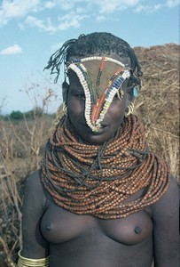
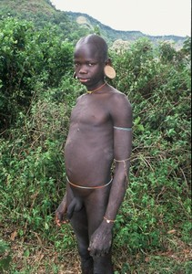
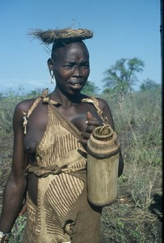
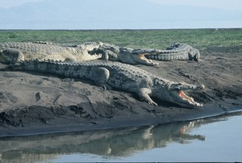
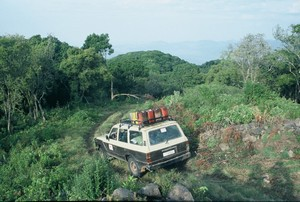
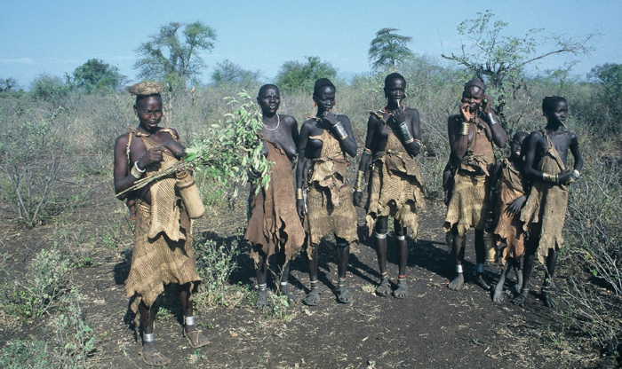

Photogallery


Ethiopia – the expedition to the NYANGATOM tribe – The Great African Adventure
Ethiopia – The Omo Expedition – the original African tribes Wild Surma + Gambela people – Anuak and Njuer tribes and maybe also the mysterious NYANGATOM tribe

Photo©Petr Jahoda

Photo©Petr Jahoda

Photo©Petr Jahoda
Dear Friends,
The land you decided to visit is exotic not only for its geographic location, but especially for its native civilizations and historic sights. We will travel by off-road vehicles through the wild African nature to get closer to the various wild African tribes – combative Surma tribe, Anuak and Njuer tribe. And if we are able to get the cars for a real bush-drive, we try to reach the Nyangatom tribe, too. Before we get there, we might experience an adventure while driving through sands, savannah and rivers. We hope all these situations can help us to become a great team. Our trip leads to the most distant and backward parts of Ethiopia. We must therefore count on a low, minimal or almost none hygienic standard. Moreover there is a huge problem with a drinking water in this area. Nowadays there are many places where it is possible to buy a bottled water Ambo, however it depends on the level of the shop supplies. It is necessary to bear in mind that this is an expedition. The eastern part of the Omo river is open to tourism. There are hotels and infrastructure there. But we go to the western riverside and here we have to count even on sleeping in our own tents!
The trip is not difficult from the physical point of view, because most of the journey we go by the off-road vehicles. However the trip is exacting from the organization and orientation side. This area was restricted and isolated for many years and no tourists were allowed to go there. Thanks to this the time has stopped on these places, due to the strict totalitarian regime the life of the native Africans has almost not changed since the famous traveler Dr. Holub was traveling around Africa.
The expedition plan – made to order
Level of difficulty: low/easy
17 days 2014 * price info in the office
Length of the expedition: 2 weeks or 3 weeks
UNIQUE AND ATYPICAL EXPEDITION TO ETHIOPIA. We will check both sides of the river Omo, with no necessary return back to Addis Ababa. We take over 100 km of bush-drive to the NYANGATOM tribe. We will see SURMA and well-known MURSI tribes as well as the BODY tribe.
These tribes are the MOST INTERESTING TRIBES IN ETHIOPIA.
1st – 2nd day: flight to Addis Ababa, The National Ethnographical Museum, the largest African open market – MERKATO. We will rent the cars there and buy some food.
3rd – 6th day: Travelling from Addis Ababa to GAMBELA city via MIZNATEFERI to the ANUAK and NJUER tribes. These are the darkest African people. They have interesting tattoos, primitive houses. Anuak and Njuer people are Sudan refugees, partially supported by their relatives living in the USA. From our temporary base camp in GAMBELA city we will continue by off-road vehicles via bush to Sudan border to meet these people. We'll spend about 2–3 days there.
7th –11th day: Going back to MIZANTEFERI and then to the KIBISH town to visit the WILDEST ETHIOPEAN SURMA TRIBE. From the town we will walk to the Surma villages – one or two treks based on the conditions and the actual situation. As Surma is one of the wildest tribes in Africa, we must follow the rules and instructions given by the local authorities. Then we will go again by cars to the National park OMO through the SURMA territory to reach the SUDAN BORDER (today it's South Sudan) and KIBISH village. This is not a mistake with the name of the village, there really are 2 villages called Kibish there. The NYANGATOM tribe lives close by. Their culture is mixed with the culture of Burme and Turkana. They use very interesting guns – FIGHTER WRIST BANDS, very sharp tool and working similar as knife. These nights we will spend in the bush. The trip to the NYANGATOM tribe is not sure, it depends on the drivers, whether they're willing to go there. There are no roads there, just a bush and the drivers can use their instinct only.
12th – 14th day: Going back to the NP OMO, other cars shall hopefully wait for us there. We will cross the river and continue by the cars to the MURSI and BODY tribes. MURSI people insert the clay plates to their lips, BODY people decorate their cows with the wild pigs teeth. IT IS THE MOST INTERESTING TRIBE ON THE LEFT SIDE OF THE RIVER OMO. From there we will go again through the territory of MURSI tribe as well as through the BANA and TSAMAI tribe area with a possible stop by HAMAR and ABRO tribes (depends on the time left). At the end we will go to the NECHESSAIR town, to take a ride on the CHAMO lake. This is an amazing CROCODILE and HIPPO SAFARI. The NILE CROCODILES living in the CHAMO lake belong to the biggest crocodiles ever. We can see pelicans there, too. Then we take a dinner in a LOCAL RESTAURANT to taste a DELICIOUS FISH from the lake.
15th – 17th day: We'll go back to ADDIS ABABA and take a flight from there back home the next day. In case there is some time left, we will stop in SODERE – LUXURY THERMAL SPA, where we can take a bath. As well we might spend one more day in Addis Ababa with shopping the souvenirs. It would be our extra day – if everything goes according to our plans. However this shopping day can't be promised and guaranteed in advance. In fact it's not needed, the last evening should be sufficient for our shopping needs.

Photo©Petr Jahoda

Photo©Petr Jahoda
Optional choices – prolongation:
From the cost point of view there is no difference between the following options. However just one optional program per expedition can be chosen. Only the trip to Lalibela can be organized individually for any participant by air.
Details for optional choices are below. In case you are interested in any of them, please mark it clearly into the application.
7 days prolongation – Central Ethiopia sights
THE FAMOUS LALIBELA TEMPLES – the most frequented sight in Ethiopia, well known for its unique churches carved from the living rock. On the way to Lalibela we will go through a great Nile canyon. We might see the endemic GELADA BABOONS there. Gelada can be distinguished from the baboon by the bright red patch of skin on its chest. If there is a time left, we can take a 1 day trip to the CAVE TEMPLE, where the skeletal remains of pilgrims are laid. With regards to the time we could also visit the BLUE NILE FALLS and COPTIC CHURCHES on the TANA lake. There is a chance to see many hundred years old Christian books made from leather. And more, we can also go to the SIMIEN MOUNTAINS – one of the most BEAUTIFUL AFRICAN NATIONAL PARKS known for its gorgeous panoramic views. There live endemic IBEX WALIE (Capra walie) and GELADA baboons there, too.
7 days prolongation – Medieval Harer and NP Awash
SAFARI in NP AWASH. We can see KUDU, ORYX, WATERFALLS and the ACTIVE VOLCANO in the AFAR TRIBE territory. All the way on the East of Ethiopia we can see a real medieval town Harer. Its narrow streets evoke the Middle Ages. The HYENA MAN lives there. The legendary HYENA MAN was savaged to death by hyenas several years ago, but his job was taken over by his son. WITH YOUR OWN EYES YOU CAN SEE FEEDING THE WILD HYENAS WITH HIS MOUTH and FROM HIS HANDS! And if there still is some time left, we can visit very interesting rocks and the endemic BABILLE ELEPHANT RESERVE.

Photo©Petr Jahoda
Price: on request.
Included in the price: All transport in the country as well as renting the cars. Accommodation, all permits and related fees, info materials, Czech guide. Local guide and armed escort where needed. During the expedition part of the program please count on bivouacs (1–3×, max 5×), therefore it's good to take a tent and a light sleeping bag with you.
Not included in the price: food, visa and related fees, entrance fees to the villages, NP and historical objects, flight tickets and related taxes for flights from Prague, Vienna and Addis Ababa, fees for taking the pictures and recording, all insurance fees (cancellation, health insurance, baggage, etc). For optional choices – price does not include the fee for the boat ride to the temples on the Tana lake, entrance fee to the islands, museums, temples and other sights, villages, national parks, attractions, fees for recording or taking pictures. The fee for stay, guide, accommodation, transport, food and the airport tax or any other fees in Istanbul are also not included.
Ethiopia – useful info and hints
Weather: hot and dry climate up to altitude 1700m, warm and mild climate for altitude 2400–2600m (16–20°C), cool climate in the mountains. The average temperature in the capital city Addis Ababa is around 15–25°C. We will go there during a dry season, which means that on our way through the Great African Rift the temperatures will be between 30–50°C during a day, 18–30°C during a night. It can be quite cold in the Bale Mountains and Simien Mountains, therefore it's good to have a warm jacket and the sleeping bag with you.
Equipment: with regards to the climate, no special equipment needed
Food: we will eat the local food and use local restaurants, only minimal food reserve taken from home is needed for 1–2 nights in the camps.
Drinks: Almost nowhere is possible to buy a bottled drinking water. However almost everywhere is possible to buy Coca-Cola, Pepsi-Cola, beer or soda water.
Accommodation: small local hotels in civilized areas, own tents in the wildness. Only light sleeping bag is recommended, most of the time there will be warm nights with a temperature around 18–28°C. Camping mat can be taken for more comfortable sleep. We will probably be able to arrange the nights in the hotels in most cases.
Transport: by off-road vehicles and mini buses, sometimes we might use pick-up cars, trucks or even boats.
Passport: PLEASE CHECK A VALIDITY OF YOUR PASSPORT, it must be valid for at least 6 more months after the expected return.
International certificate of vaccination: it is required to have this certificate with the valid yellow fever vaccination to get a visa at the airport in Addis Ababa or in Berlin (if you ask for visa there).
Visa: can be obtained at the airport.
Language: the official language is Amharic, sometimes English is understood.
Money: Food and other essential things per 28 days – USD 200–350. Entrances – approx. USD 100. Souvenirs – we recommend USD 100–200 as there are many nice things to buy there. Prices are not high and it is necessary to haggle. The best currency to use is USD, sometimes EUR or even GBP (rarely) can be used. It is also possible to use travel checks in Addis Ababa. We have no experience with the payment cards.
Health: Please don't forget to have the valid yellow fever vaccination, antimalarial pills and the water treatment agent. It is recommended to see your dentist before departure.
Insurance: It's not included in the price. Please arrange the insurance individually and make sure all possible activities are included in. For this kind of trip the regular tourist insurance is OK, however in case you feel that any additional insurance is needed, please arrange it. Same with the payment card and cancellation fees insurance – it's up to your decision.
Předchozí stránka: Home
Následující stránka: Expeditions